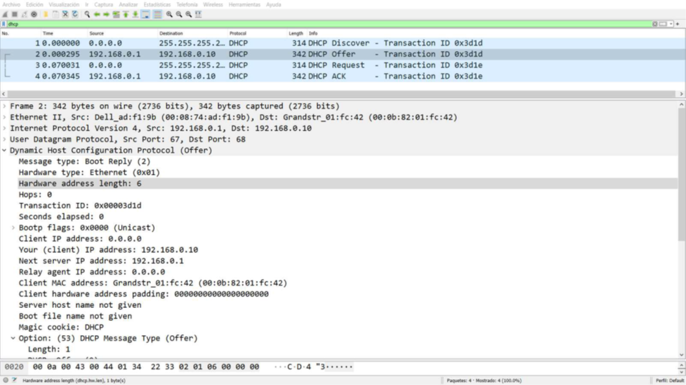
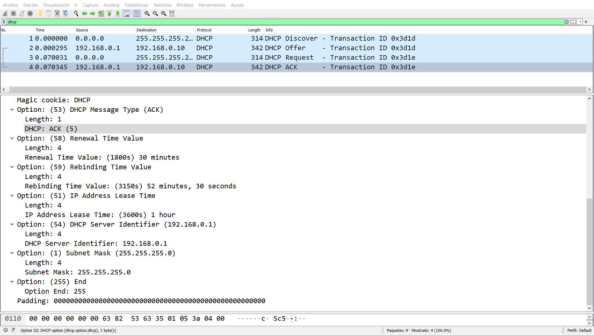

Autor: Arturo Olivares Martos
El examen de la Práctica 2 (sesiones 1 y 2) consiste en un cuestionario de 10 preguntas tipo test, donde cada error resta 1/3 puntos. La preguntas se sacaron de un banco de preguntas y salían aleatorias, por lo que los exámenes no coincidieron. En este documento hemos buscado juntar todos los exámenes en un mismo fichero.
Se quieren asignar direcciones IP de forma dinámica a equipos que pertenecen a la subred 10.10.0.0/24 ¿cómo lo haría?
Suponga que tenemos configurado correctamente destination NAT en R1_6 para gestionar remotamente PC1_1 desde otras islas usando SSH (puerto 22). ¿Qué comando usaría para conectarse desde otras islas a PC1_1 a través de la red de datos?
¿Cuál es el menú que debemos elegir en un router Mikrotik usando Winbox para configurar NAT?
Dada la topología de la red de datos del laboratorio y la siguiente configuración para DST-NAT en RX_3, ¿cuál de las siguientes afirmaciones es correcta?
| Parameter | Value |
|---|---|
| chain | dstnat |
| Dst-address | 172.16.X.3 |
| Action | dst-nat |
| To-address | 33.X.3.3 |
| Protocol | tcp |
| Dst-port | 80 (HTTP) |
| To-port | 8080 |
Considerando la topología de la red de datos del laboratorio, imagine que se quiere configurar RX_4 como servidor DHCP para asignar direcciones IP a los equipos PCX_3 y PCX_4, ¿qué subred(es) debemos añadir obligatoriamente a la lista de redes DHCP en RX_4?
Considerando la topología de la red de datos del laboratorio y la configuración recogida en la siguiente tabla, ¿cuál de las siguientes afirmaciones es correcta?
| Parameter | Value |
|---|---|
| DHCP Server Configuration | |
| Address-Pool | 33.X.3.10 – 33.X.3.100 |
| Relay | 33.X.3.1 |
| Lease-time | 0d01:00:00 |
| Interface | Ether1 |
| DHCP Relay Configuration | |
| Interface | Ether1 |
| DHCP-Server | 172.16.X.5 |
| Local-Address | 33.X.3.1 |
Para asignar direcciones IP dinámicas con DHCP:
¿Cómo interpretaría la siguiente regla NAT añadida al firewall de un equipo Mikrotik?chain=dstnat action=dst-nat to-addresses=33.1.2.2 protocol=tcp dst-port=80
Considerando la siguiente traza capturada con Wireshark, ¿cuál de las siguientes afirmaciones es correcta?

¿Cuál sería el comando para que un cliente solicite una IP al servidor DHCP para su interfaz de Datos?
Considerando la siguiente traza capturada con Wireshark, ¿cuál de las siguientes afirmaciones es correcta?

En un esquema de asignación de direcciones IP dinámicas con DHCP ¿qué papel juega el tiempo de lease?
¿Cuál de las siguientes configuraciones aplicaría a R1_6 si queremos que todos los equipos de la isla 1 puedan originar peticiones al resto de islas a través de la red de datos, pero no queremos que los equipos de otras islas puedan inferir el direccionamiento interno usado en la isla 1?
En un esquema de traducciones SRC-NAT ...
Para que a un PC de la subred 33.1.2.0/24 se le pueda asignar una dirección IP de forma dinámica, ¿qué pasos se han de seguir?
¿Cómo interpretaría la siguiente regla NAT añadida al firewall de un dispositivo Mikrotik?chain=src-nat action=masquerade out-interface=ether1
¿Cómo saben tanto cliente y servidor, en un esquema de asignación dinámica de IP, que una dirección IP se puede seguir utilizando por el dispositivo al que se le asignó?
Para permitir que usuarios externos a una empresa puedan acceder a servicios internos localizados en su red privada o corporativa, ¿qué tipo de traducción de direcciones utilizaría?
Si mi red fuese muy dinámica, es decir, con dispositivos añadiéndose y dejando mi red muy asiduamente, ¿qué tiempo de lease escogería?